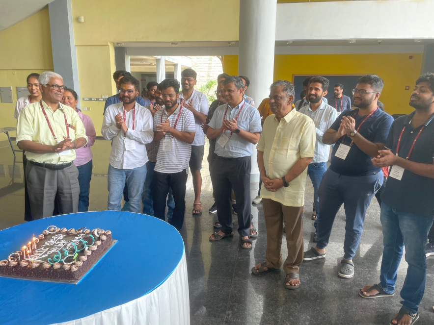
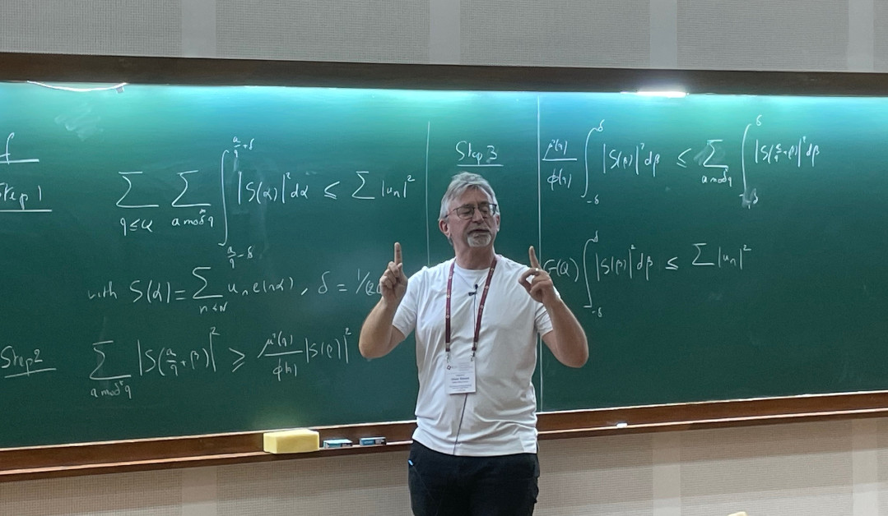
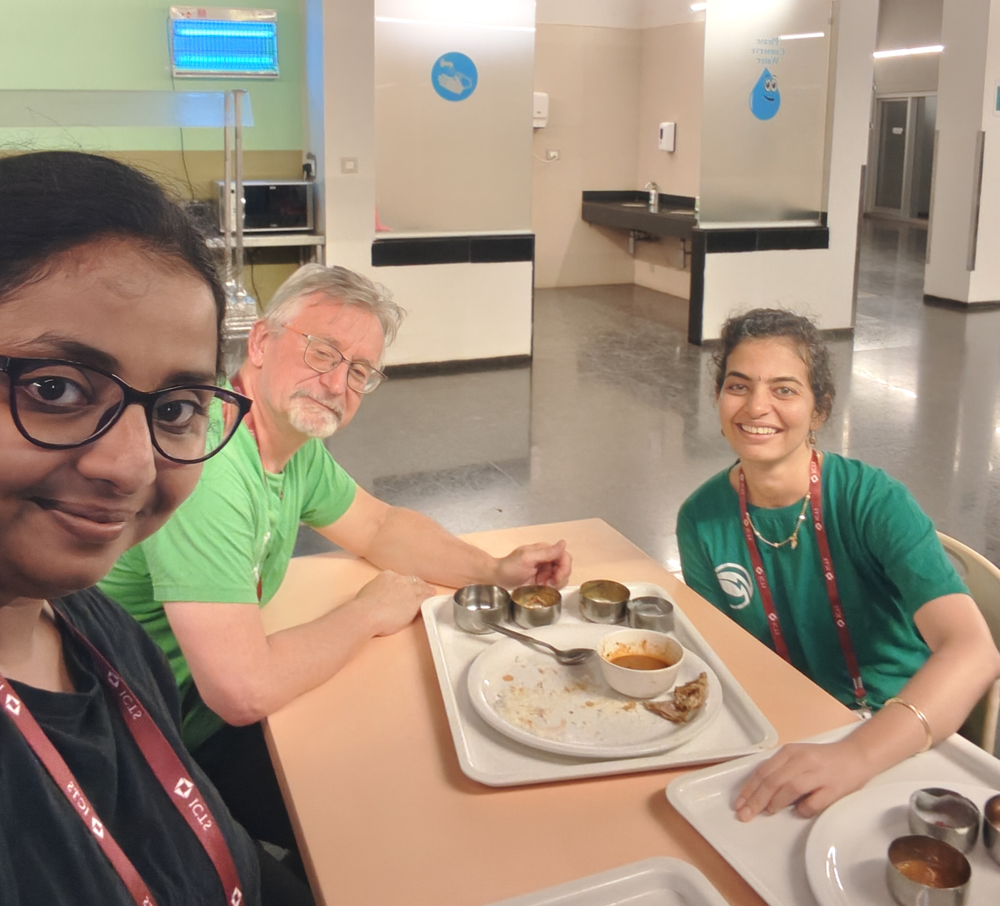
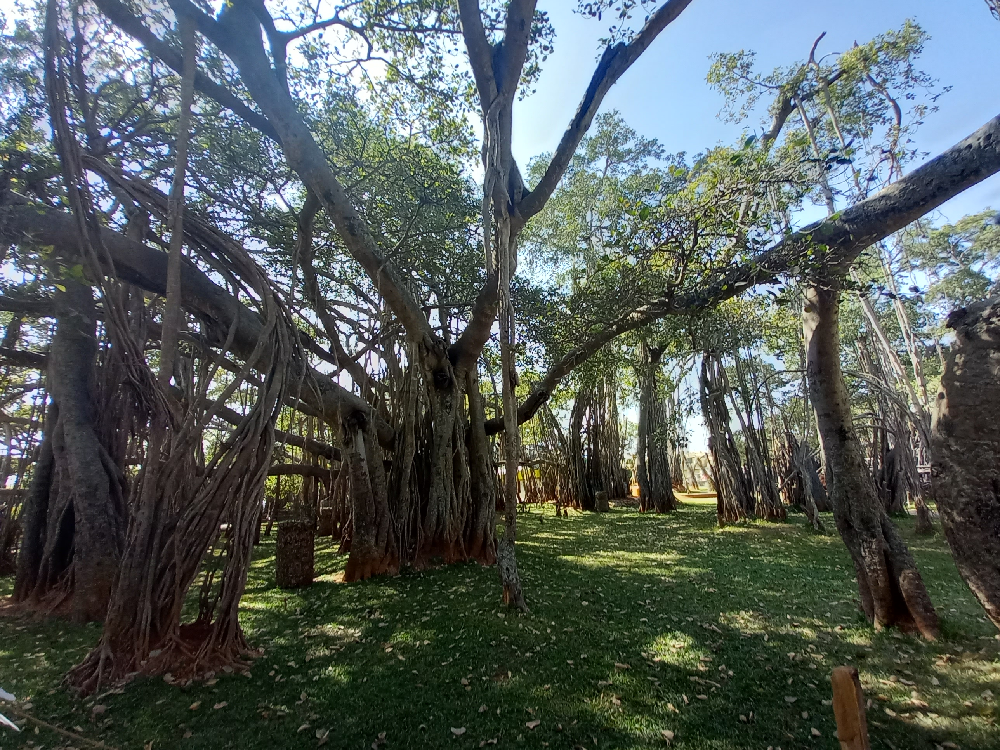

We present in this series of lectures how one may sieve from the large sieve inequality. We shall rapidly establish this inequality and derive Montgomery's bound, and in particular the Brun-Titchmarsh Theorem. The factor 2 that seems to be a loss in this inequality will be shown to be linked with possible Siegel zeros. We will proceed by proving (a variant of) this theorem by starting directly from the Parseval identity on $\mathbb{R}/\mathbb{Z}$ and follow a path that seems potentially optimal but that will still lead to the same factor~2. So large values of the Fourier polynomial on the primes, say in some interval, probably does not behave as expected and may take large values at non rational phases in $\mathbb{R}/\mathbb{Z}$. In order to investigate this possibility, we prove a sharp large sieve inequality for this trigonometric polynomial when evaluated on a small subset by using an enveloping sieve. On calling loosely a cusp a point the our Fourier polynomial takes a large value, a consequence of our inequality is that many rational points are indeed cusps and that any other cusp is accompanied by a large stream of rational translates that are also cusps.
Beware! These notes are not in final format and may contain errors!



